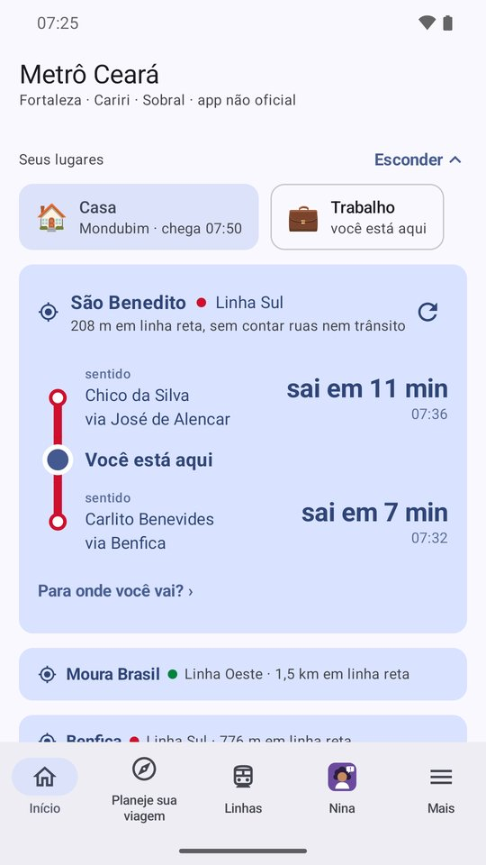
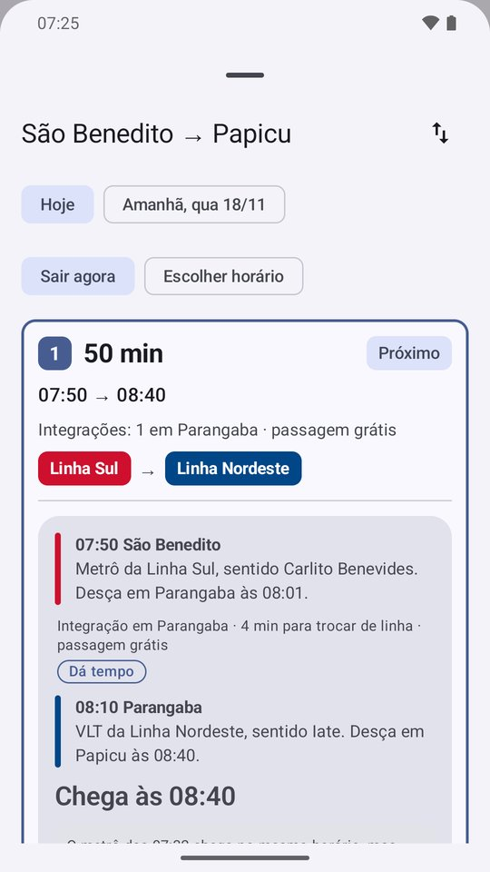
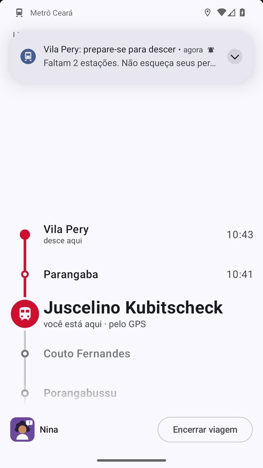
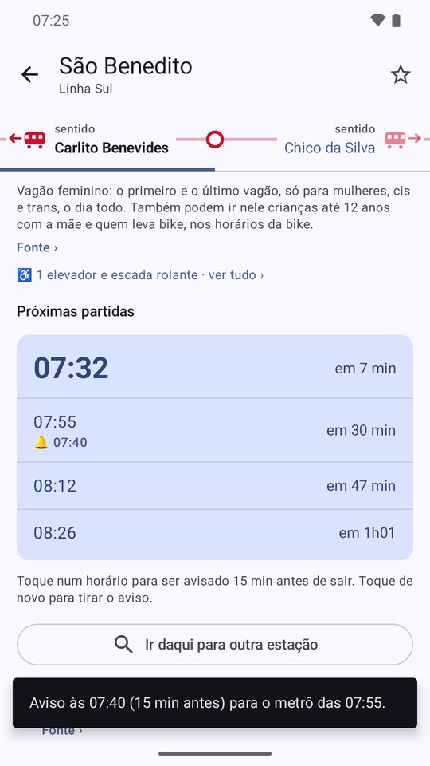
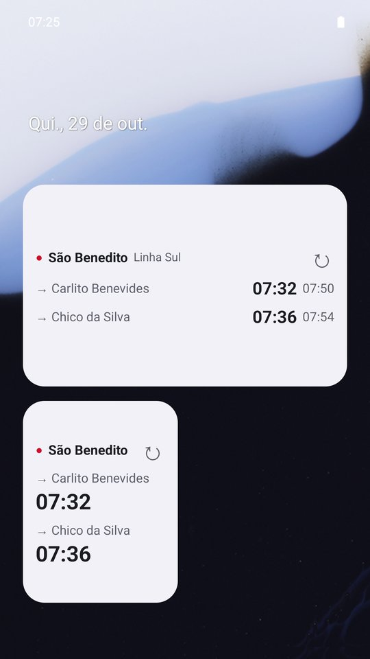

🏠 Casa e Trabalho
Marque onde você mora e onde trabalha ou estuda. A tela inicial mostra qual metrô pegar na ida e na volta.
Android e versão liteInício › Conheça o app
8 coisas que ele faz além do horário. Grátis, sem anúncios e sem cadastro.

Marque onde você mora e onde trabalha ou estuda. A tela inicial mostra qual metrô pegar na ida e na volta.
Android e versão lite
Diga o destino e o app monta a viagem, com a integração entre as linhas e a hora de cada trecho.
Android e versão lite
Mostra onde você está no caminho e avisa antes da sua estação, mesmo com a tela desligada.
Só no AndroidMande por mensagem a que horas você chega, estação por estação, pela tabela de horários.
Android e versão lite
Toque no sininho de um horário e o app avisa quando for hora de sair de casa, nos dias que você escolher. Na versão lite, vira um lembrete na agenda.
Android e versão lite
Ponha os próximos horários da sua estação na tela inicial do celular, sem abrir o app.
Só no AndroidMostra em que horários pode embarcar com a bicicleta em cada estação.
Android e versão liteQuando o Metrofor muda o horário (feriado, eleição, ENEM), o aviso aparece no topo. No domingo comum, mostra que não tem operação.
Android e versão lite